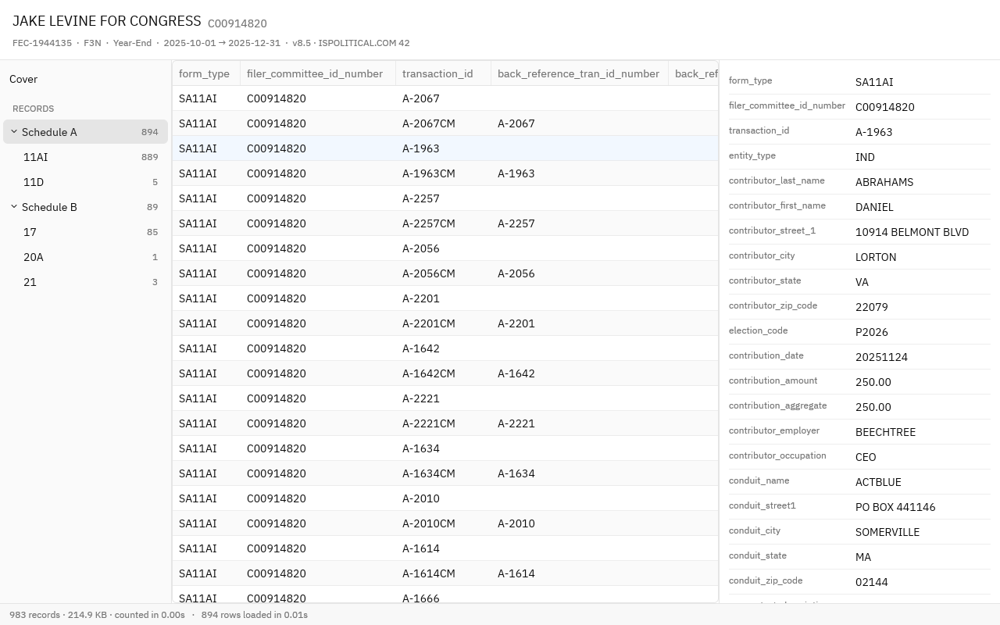

FEC Viewer
A fast desktop app for exploring .fec files, the electronic
filings committees submit to the Federal Election Commission. Open a
filing to browse its cover page, schedules and every itemized record.

Opens big filings instantly
The header and cover load right away; records stream in from a background scan.
Organized by schedule
Records are grouped into Schedules A, B, E and more, with counts for every line number.
Nothing to install to try
Drop a .fec file on the demo page. It's parsed entirely in your browser and never uploaded.